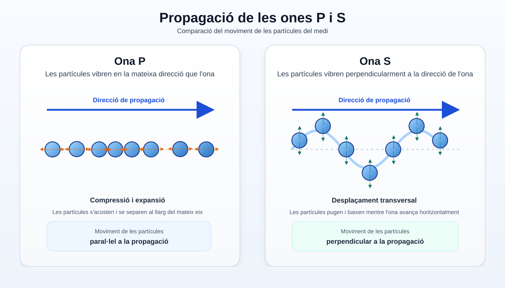
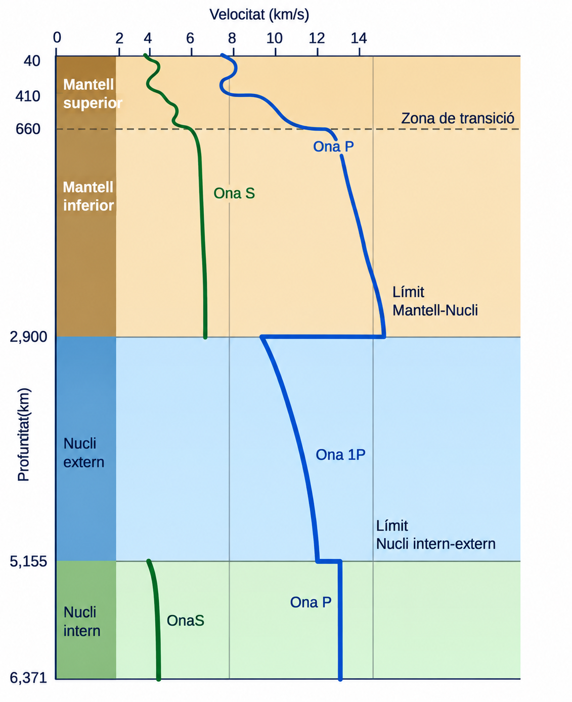

Imaginau que encara no coneixem l'estructura interna de la Terra.
Quina d'aquestes opcions ens donaria informació més directa sobre els materials de l'interior?
Sí. Si extreim una roca, podem observar-la i analitzar-la directament.
Però queda una qüestió: fins a quina profunditat podem arribar?
No basta. Les fotografies de la superfície aporten molta informació, però no ens mostren què hi ha a milers de quilòmetres de profunditat.
Aquesta és una possibilitat molt important. Si un senyal travessa l'interior i en podem estudiar els canvis, pot aportar informació sobre els materials que ha travessat.
Hi tornarem després.
No necessàriament. En ciència sovint podem estudiar una cosa que no veim directament a partir de les evidències que produeix.
Alguns processos geològics duen fins a la superfície fragments originats a més profunditat.
Quina d'aquestes observacions NO és una mostra directa d'un material terrestre?
Sí que és directa. Podem observar i analitzar físicament la mostra extreta.
Sí que és directa. La roca és accessible i la podem estudiar directament.
Exacte. El senyal sísmic no és una mostra de roca. L'haurem d'interpretar per deduir com és el medi que ha travessat.
És una mostra directa, però cal interpretar-la amb precaució. Podem estudiar el fragment físicament, encara que després hàgim de determinar d'on procedeix i què representa.
Els mètodes directes ens donen mostres reals, però només d'una part molt petita de la Terra. Per investigar-ne l'interior profund necessitam evidències indirectes.
Per què P i S no es propaguen de la mateixa manera?
Quina seria ara la pregunta més útil per continuar la investigació?
No. Els colors de la figura només serveixen per distingir visualment les dues famílies.
Exacte. Si volem utilitzar les ones per investigar l'interior, necessitam saber com respon cada tipus d'ona davant medis diferents.
No és la pregunta que ens ajudarà a interpretar les dades. Necessitam entendre el seu comportament físic.
QUEDA'T AMB AIXÒ
Un terratrèmol genera ones sísmiques que podem registrar a distància.
Les ones P i S no es propaguen de la mateixa manera, i aquesta diferència pot donar-nos informació sobre l'interior de la Terra.
4 · Per què les ones P i S es comporten diferent?¶
Per interpretar les trajectòries de les ones sísmiques, primer hem d'entendre com es mou el material quan passa cada tipus d'ona.

Quina diferència fonamental hi ha entre el moviment de les partícules en una ona P i en una ona S?
Exacte. Les ones P produeixen sobretot compressions i expansions; les ones S produeixen una deformació transversal o de cisallament.
No. Fixau-vos en les fletxes que indiquen el moviment de les partícules respecte de la direcció de propagació.
No. En una ona S les partícules sí que vibren, però ho fan perpendicularment a la direcció en què avança l'ona.
Aquesta regió interna podria estar en estat líquid.
Quina part d'aquest raonament és una observació directa?
Exacte. Això és allò que podem detectar amb els registres sísmics. L'estat líquid de la regió és una inferència.
No. No observam directament aquesta regió. En deduïm l'estat físic a partir de les dades sísmiques.
QUEDA'T AMB AIXÒ
Les ones P poden propagar-se per sòlids i líquids. Les ones S només es propaguen per sòlids.
Aquesta diferència ens permet utilitzar les ones sísmiques per inferir l'estat físic de materials que no podem observar directament.
Però les ones P també canvien de direcció en determinats punts. Què ens pot indicar això?
Podem representar d'una altra manera les dades sísmiques: mesurant a quina velocitat es poden propagar les ones P i S en els materials de cada profunditat.

On observau els canvis més bruscs en el comportament de les ones?
No. Fixau-vos especialment en els límits entre el mantell i el nucli, i entre el nucli extern i l'intern.
Exacte. A aquestes profunditats les corbes mostren canvis bruscs: són evidències que les propietats del medi també canvien.
Sí que n'hi ha. Les corbes no evolucionen sempre de manera gradual: presenten canvis molt marcats en determinades profunditats.
Important: el tram d'ones S representat al nucli intern indica que el material del nucli intern sòlid pot transmetre ones de cisallament. No significa que una mateixa ona S hagi travessat el nucli extern líquid.
Quan les dades sísmiques indiquen un canvi brusc de propietats a una determinada profunditat, podem inferir que hi ha un límit entre dues regions internes.
Aquest límit s'anomena discontinuïtat sísmica.
Discontinuïtat sísmica: frontera interna on les propietats del medi canvien prou perquè també canviï el comportament de les ones sísmiques.
Una discontinuïtat és una línia que els científics han observat directament dins la Terra?
No. No podem observar directament aquests límits a milers de quilòmetres de profunditat.
Exacte. Les discontinuïtats són fronteres inferides a partir de les dades sísmiques: canvis de velocitat, trajectòria o propagació.
A aquella profunditat hi ha un canvi de propietats i, per tant, una frontera interna.
Quina afirmació descriu millor el que ens aporten les ones sísmiques?
No. Les dades sísmiques són mesures indirectes que necessiten interpretació.
Exacte. Els canvis en la propagació de les ones ens permeten construir un model de regions internes separades per discontinuïtats.
No. Un canvi de velocitat indica un canvi de propietats, però no identifica per si sol un mineral concret.
QUEDA'T AMB AIXÒ
Quan una ona sísmica entra en un medi amb propietats diferents, la seva velocitat pot canviar i la trajectòria es pot refractar.
Els canvis bruscs en la propagació ens permeten inferir discontinuïtats a l'interior terrestre.
Amb totes aquestes evidències, quin model de l'interior de la Terra podem construir?
Les ones S no es propaguen pel nucli extern, mentre que les P sí.
Quina conclusió general és compatible amb totes aquestes dades?
No. Si l'interior fos homogeni, no esperaríem canvis bruscs i sistemàtics en la velocitat i la trajectòria de les ones.
Exacte. Les dades indiquen que l'interior terrestre està format per regions amb propietats diferents.
No. Les dades només indiquen una gran regió interna líquida; altres regions transmeten ones de cisallament i, per tant, són compatibles amb materials sòlids.
Dibuixam fronteres i regions internes per sintetitzar allò que indiquen les evidències.
Què és el més important d'aquesta cadena?
No. El valor científic del model és que explica dades observables, no que el dibuix es pugui memoritzar.
Exacte. El fil de tota la investigació és dada → interpretació → inferència → representació.
No. Les zones profundes no s'han observat directament; les inferim a partir de dades geofísiques.
QUEDA'T AMB AIXÒ
No coneixem l'interior terrestre perquè l'hàgim observat directament.
Els canvis en el comportament de les ones sísmiques ens permeten inferir discontinuïtats, regions internes i diferències d'estat físic.
Ja sabem que l'interior de la Terra no és homogeni i que algunes de les seves regions es comporten de manera diferent. Però això encara no explica una cosa fonamental: per què la superfície terrestre està en moviment?
Respon de manera breu, amb frases completes. No cal copiar els enunciats sencers.
Dada o inferència? Indica què és cada afirmació i justifica una de les dues.
a) En determinades estacions no es registren ones S procedents d'un terratrèmol.
b) A l'interior de la Terra hi ha una regió en estat líquid.
Construeix la inferència. Els registres mostren que les ones S no arriben a determinades zones de la superfície i sabem que les ones S no es propaguen pels líquids. Quina hipòtesi sobre l'interior és compatible amb aquestes dades?
Per què sabem que l'interior no és homogeni? Justifica-ho utilitzant almenys una evidència sísmica: un canvi de velocitat, una refracció o una diferència entre el comportament de les ones P i S.
Model o fotografia? Explica per què el dibuix de les capes internes de la Terra és un model científic i no una observació directa.